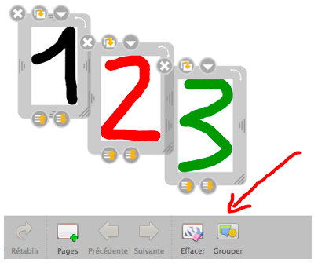

Tutti gli oggetti (immagini, suoni ecc.) ) inseriti sulla pagina, come pure le annotazioni scritte e le sottolineature possono essere selezionati con il cursore e raggruppati a formare un solo oggetto, cliccando sull'icona «Raggruppa» nella barra strumenti.
Possono anche essere separati dal gruppo cliccando di nuovo sull'icona «Separa».
La selezione multipla si può ottenere in due modi:
il cursore permette di selezionare un insieme di oggetti presenti all'interno del rettangolo disegnato, se gli oggetti sono contigui,
si può usare il comando Maiusc+clic per raggruppare oggetti non contigui.
